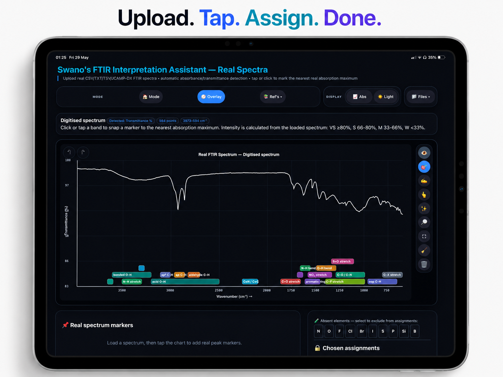
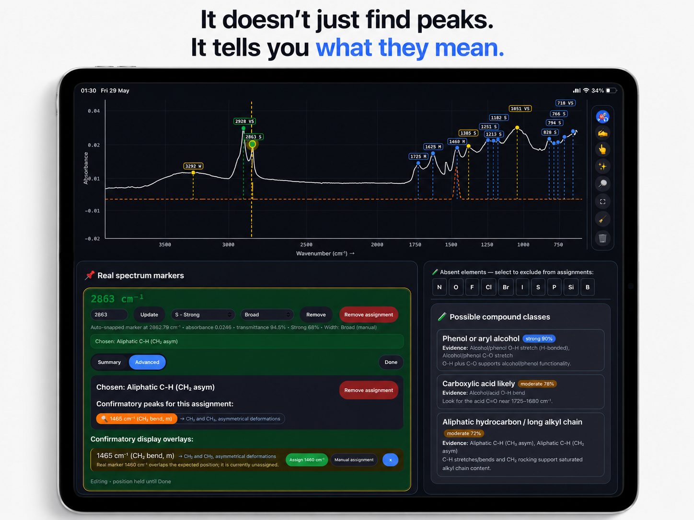
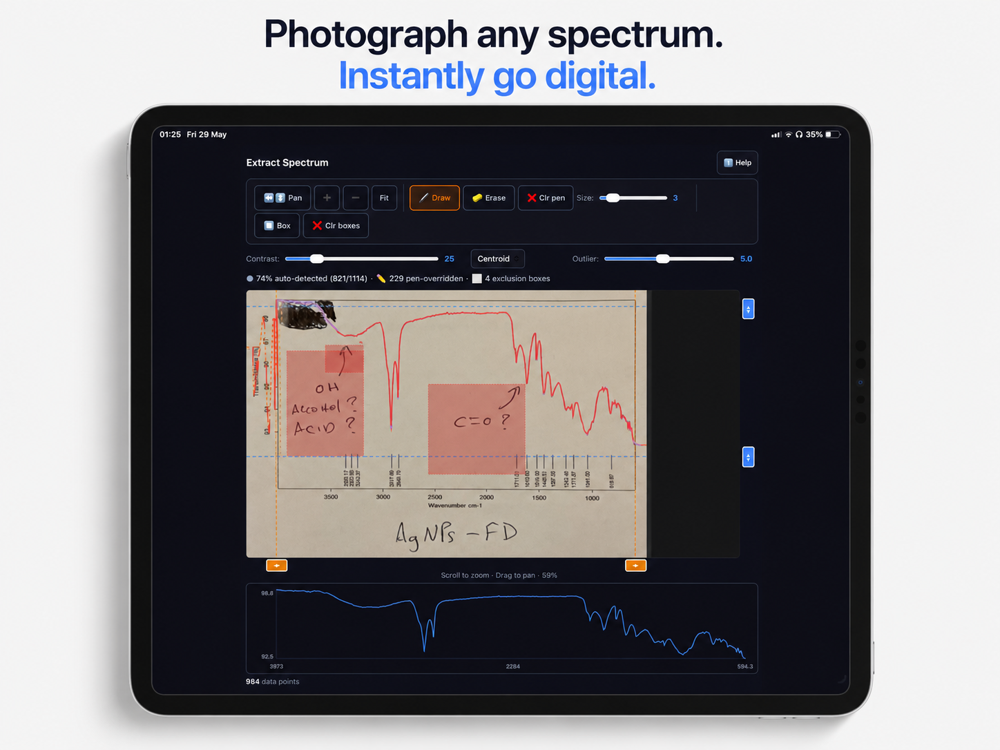
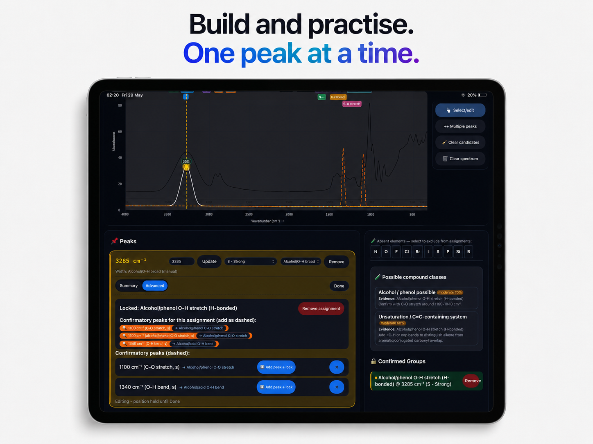

Support & Documentation
Swano's FTIR Interpretation Assistant
A complete FTIR spectrum analysis tool for students, researchers, and lab professionals. Available on iPhone, iPad, and Mac.
A complete FTIR spectrum analysis tool for students, researchers, and lab professionals. Available on iPhone, iPad, and Mac.




The app has three distinct modes, each designed for a different workflow. Switch between them at any time from the Mode menu.
Upload a CSV, TSV, TXT, or JCAMP-DX file exported directly from your spectrometer. The app auto-detects absorbance or transmittance, lets you tap peaks to mark them, and suggests functional group assignments with confirmatory evidence.
Build theoretical spectra by placing Gaussian peaks manually at known wavenumbers. Ideal for teaching, practising assignments, or exploring how overlapping bands look. Add confirmatory peaks, lock assignments, and export annotated PDF reports.
Photograph or scan a printed FTIR spectrum. Apply perspective correction, calibrate the X and Y axes against known tick marks, then extract the digital data and open it directly in Real Spectra mode.
Tap Files → Upload spectrum and choose a CSV, TSV, TXT, or JCAMP-DX (.jdx/.dx) file. The app reads wavenumber and intensity columns automatically and detects whether the data is absorbance or transmittance.
Tap anywhere on the spectrum chart. Assisted pick snaps to the nearest detected absorption maximum. Manual pick places a marker exactly where you tap — useful for broad O-H envelopes or shoulders that don't form a clean maximum.
Each marker shows a ranked list of functional-group candidates. Tap a suggestion to lock it as your assignment. Use Select/edit mode to adjust the wavenumber, intensity, or shape of an existing marker.
Use the element-exclusion bar to mark atoms absent from your sample (e.g. N, S, halogens). The app filters out assignments that require those elements, sharpening the candidate list.
Tap Files → Save TSV to save the session in a format you can reload later. Tap Files → Export Report to generate a PDF chart with all assignments and confirmatory evidence.
Tap Choose image to pick a photo from your library, or use Take photo to photograph a printed or photocopied spectrum directly.
Drag the four coloured corner handles to match the corners of the spectrum plot area. This removes any tilt or keystone distortion from the photograph.
Tap known wavenumber positions on the axis (e.g. 4000, 3000, 2000, 1000 cm⁻¹) and enter the corresponding values. A minimum of two points is required; more points improve accuracy for non-linear axes.
Tap the top and bottom of the Y axis scale and enter the corresponding absorbance or transmittance values.
Tap Extract spectrum to digitise the trace, then Open in Real Mode to transfer the data directly into Real Spectra mode for full analysis. Or tap Download CSV to save the raw data.
Real Spectra mode accepts:
The app auto-detects absorbance vs transmittance. If detection is wrong, use Display → Source format to override it manually.
In Real Spectra mode, tap Files → Save session TSV. The saved file includes your spectrum data, all markers, and all assignments. To reload it, tap Files → Upload spectrum and open the saved TSV.
In Sandbox mode, tap Files → Save session to export a JSON file with all your peaks and assignments.
Accuracy depends on image quality and the number of calibration points used. For best results:
For peer-reviewed work, always verify digitised data against the original published figure.
Yes. In Real Spectra mode, tap Files → Load reference spectrum. The reference trace is overlaid in red on the same chart. This is useful for comparing an unknown to a known compound or a literature spectrum.
The element exclusion bar in Real Spectra mode lets you tell the app which atoms are definitely not in your sample. For example, if you know your compound contains no nitrogen, tap N to suppress all amine, amide, nitrile, and nitro assignments from the candidate lists. This makes the remaining suggestions more relevant.
Tap Files → Export Report in either Real Spectra or Sandbox mode. The app generates a PDF containing the annotated spectrum chart, your peak assignments, confirmatory evidence, and compound-class suggestions. You can share it via AirDrop, Mail, or any Files-compatible app.
If a spectrum was already open in Real Mode when you tapped Open in Real Mode from the Digitiser, a dialog will appear asking whether to replace the current spectrum or save the digitised data as a CSV. If you see a blank chart after transfer, try tapping ⛶ Fit in the toolbar to reset the zoom.
Yes — completely. All analysis, peak detection, assignment matching, and report generation happens on-device. No internet connection is required and no data is ever sent to a server.
Sandbox mode is designed specifically for teaching and self-study. You can build example spectra from scratch, add peaks at known positions, lock assignments with colour-coded confirmatory evidence, and export annotated PDFs for handouts or coursework.
Last updated: June 2026
Swano's FTIR Interpretation Assistant does not collect, store, transmit, or share any personal data. All processing happens entirely on your device.
We collect no data whatsoever. Specifically:
The app requests access to your camera and photo library solely to allow you to import spectrum images into the Digitiser. Images are processed locally on your device and are never transmitted or stored outside the app.
Spectrum files you open (CSV, TSV, TXT, JCAMP-DX) and files the app saves (TSV sessions, JSON sessions, PDF reports) remain entirely under your control via the iOS Files app. The app does not retain copies of these files beyond your current session unless you explicitly save them.
The app contains no third-party SDKs, advertising networks, or analytics services. The only framework used is Apple's Capacitor runtime, which is subject to Apple's own privacy practices.
Because no data is collected, the app is safe for users of all ages. It is not directed at children under 13 in any commercial capacity.
If this policy ever changes, an updated version will be posted at this URL. The app will not collect any personal data without clearly notifying you first.
Questions about this privacy policy? Email SwanoFTIR@outlook.com.
Have a question not answered above, found a bug, or have a feature suggestion? We'd love to hear from you.
📧 Email: SwanoFTIR@outlook.com
.
We aim to respond within 2 business days. For App Store review appeals, please also use the email above and mention "App Store review" in the subject line.